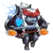
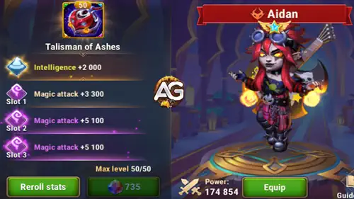
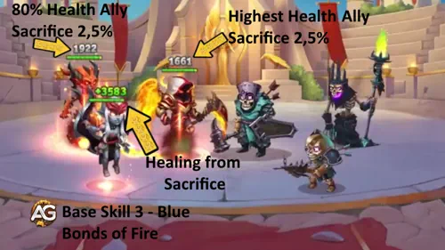
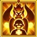
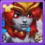

Guide d'Aidan : Reliques et compétences pour Hero Wars Alliance
- Par : Alexandre Domingos. .
Aidan peut transformer une équipe au bord de la défaite en une équipe qui refuse de tomber. Dans ce guide de Hero Wars Alliance, je détaille ses soins, ses boucliers et sa relique légendaire pour que vous compreniez d'où vient cette capacité à survivre et quelles améliorations méritent vos ressources en premier.
Ce qui attire mon attention, c'est la façon dont ses compétences relient sacrifice et récupération. Les dégâts des compétences alliées créent davantage de cibles à soigner, Kayla obtient une nouvelle chance grâce à la résurrection, et la relique ajoute de la protection et une Intelligence croissante. La véritable décision consiste à déterminer si votre Aidan a besoin de soins plus puissants ou d'une résistance suffisante pour continuer à les prodiguer.


Sommaire d'Aidan
- Qui est Aidan ?
- Rôle au combat et évaluations
- Avantages et inconvénients
- Comparaison des statistiques maximales des talismans
- Guide des talismans
- Compétences de la relique légendaire et priorité d'amélioration
- Compétences du Royaume
- Meilleurs skins et priorité d'amélioration
- Priorité d'amélioration des artefacts
- Priorité d'amélioration des glyphes
- Comment contrer Aidan
- Synergies d'Aidan
- Meilleures équipes et anciennes équipes populaires
- Verdict final d'Alexandre
Qui est Aidan dans Hero Wars Alliance ?
Aidan est un Soigneur de la ligne arrière appartenant à la Voie du Chaos. Son rôle est de maintenir les alliés au combat grâce aux soins, aux augmentations temporaires de Vie et aux boucliers d'urgence, avec un soutien supplémentaire de résurrection pour Kayla.

- Classe principale : Soigneur
- Position : Ligne arrière
- Statistique principale : Intelligence
- Faction : Voie du Chaos
- Synergie principale : Kayla, les alliés du Chaos et les équipes qui subissent des dégâts de compétences alliées.
Étreinte de feu soigne les alliés qui ont subi des dégâts de compétences alliées depuis son utilisation précédente. Le sacrifice allié fait ainsi partie de son cycle de récupération. Les alliés du Chaos reçoivent des soins plus puissants d'Étreinte de feu et de plusieurs effets de la relique, tandis que Kayla bénéficie de mécaniques de résurrection spécifiques.
Ma première priorité est de garder Aidan en vie. Des formules de soins puissantes ne sont utiles que tant qu'il peut continuer à utiliser ses compétences, et sa propre compétence ultime consomme une partie de sa Vie maximale.
Avantages et inconvénients d'Aidan - Hero Wars Alliance
✅ Avantages
- Soigne plusieurs alliés après des dégâts de compétences alliées.
- Soins plus puissants pour les héros du Chaos.
- Les boucliers d'urgence protègent les alliés avec peu de Vie.
- Soutien de résurrection spécifique pour Kayla.
- Les améliorations de la relique ajoutent protection, soins et Intelligence cumulable.
❌ Inconvénients
- La compétence ultime consomme 20% de sa propre Vie maximale.
- Dégâts directs limités et aucun contrôle de foule répertorié.
- La résurrection de Kayla exige sa présence dans l'équipe.
- La protection du bouclier ne dure que 4 secondes.
- La croissance d'Intelligence nécessite des dégâts de compétences alliées pour atteindre son seuil d'activation.
Aidan - Comparaison des statistiques maximales des talismans
Ces valeurs de configuration maximale servent de point de départ aux calculs ci-dessous. Elles sont présentées avant les gains temporaires de Vie et d'Intelligence pendant le combat ; les gains de statistiques de la relique ne sont pas ajoutés une seconde fois.
| Statistique | Talisman 1: Talisman des Cendres | Talisman 2: Talisman de l'Implacabilité |
|---|---|---|
| 17,843 | 15,843 | |
| 3,679 | 3,679 | |
Force | 4,137 | 4,137 |
| 1,129,442 | 1,315,480 | |
| 37,314 | 35,314 | |
| 230,375 | 203,585 | |
| 39,840 | 39,840 | |
| 43,200 | 41,200 | |
| 3,380 | 7,780 | |
| 278,122 | 279,449 |
Guide des talismans d'Aidan - Hero Wars Alliance
Vous choisissez un seul talisman pour le combat. Seuls les bonus du talisman équipé s'appliquent ; posséder les deux ne combine pas leurs statistiques. Contrairement aux bonus des skins, ce choix modifie les avantages qu'Aidan apporte au combat. Évaluez les trois emplacements de relance selon leur total combiné.
1 - Talisman des Cendres

| Talisman | Bonus de statistique principale |
|---|---|
| Intelligence +2,000 |
| Emplacement 1 | Emplacement 2 | Emplacement 3 | Bonus total de relance |
|---|---|---|---|
| Attaque magique +6,600 | Attaque magique +6,600 | Attaque magique +6,600 | Attaque magique +19,800 |
Le bonus d'Intelligence ajoute +6,000 d'Attaque magique, +2,000 de Défense magique et +2,000 d'Attaque physique. Avec le bonus combiné de relance de +19,800 Attaque magique, le Talisman des Cendres renforce Étreinte de feu, les soins personnels et les effets de relique qui dépendent de l'Attaque magique.
2 - Talisman de l'Implacabilité

| Talisman | Bonus de statistique principale |
|---|---|
| Ténacité +4,000 |
| Emplacement 1 | Emplacement 2 | Emplacement 3 | Bonus total de relance |
|---|---|---|---|
| Vie +60,500 | Vie +60,500 | Vie +60,500 | Vie +181,500 |
Le Talisman de l'Implacabilité ajoute +4,000 Ténacité et un bonus combiné de relance de +181,500 Vie. La configuration maximale fournie atteint 1,315,480 de Vie et 7,780 de Ténacité. Davantage de Vie maximale augmente les valeurs de Rituel du Phénix basées sur la Vie ; la Ténacité aide à résister aux dégâts ennemis sous 50% de Vie, mais ne réduit pas les dégâts qu'Aidan s'inflige.
Quel talisman utiliser pour Aidan ?
Mon choix par défaut pour des soins plus puissants est le Talisman des Cendres. Ses 230,375 d'Attaque magique permettent à Étreinte de feu de fournir 73,912.5 de soins par cible ordinaire, contre 65,875.5 avec le Talisman de l'Implacabilité. Il améliore également la réduction de dégâts du niveau 10 et le gain initial d'Intelligence de Prix de la sagesse. Le guide des talismans recommande également le premier talisman d'Aidan.
Je passerais au Talisman de l'Implacabilité lorsqu'Aidan a besoin de plus de résistance. Il offre 186,038 de Vie maximale supplémentaire et 4,400 de Ténacité supplémentaire dans les configurations complètes fournies. L'augmentation de Vie des alliés de Rituel du Phénix passe de 228,288.4 à 265,496, mais son propre coût en Vie passe aussi de 225,888.4 à 263,096. Le bénéfice de la Ténacité dépend d'une Vie faible et de la statistique principale de l'attaquant ; il ne s'agit pas d'un pourcentage fixe de réduction des dégâts.
Conseils d'Alexandre : Si Aidan survit mais que l'équipe a besoin de plus de récupération, commencez avec le Talisman des Cendres. S'il tombe avant de pouvoir entretenir le cycle de soins, essayez le Talisman de l'Implacabilité. Jugez le résultat selon sa capacité à maintenir l'équipe au combat, plutôt qu'à sa seule Puissance totale.
Priorité d'amélioration des compétences de la relique légendaire d'Aidan - Hero Wars Alliance
Comprenez les soins, les boucliers et les améliorations de relique d'Aidan, comparez les deux talismans et investissez d'abord dans les compétences qui maintiennent votre équipe en vie au combat.
Conservez l'ordre visuel des compétences ci-dessous. Mon ordre d'investissement recommandé pour les compétences de base est Étreinte de feu, Bouclier de flammes, Rituel du Phénix, puis Liens de feu. Les compétences de relique se débloquent aux niveaux de relique requis ; leurs indications de priorité décrivent la valeur de l'investissement, et non un ordre distinct de déblocage manuel.
Tous les calculs utilisent les statistiques maximales ci-dessus : 230,375 d'Attaque magique et 1,129,442 de Vie avec le Talisman des Cendres, ou 203,585 d'Attaque magique et 1,315,480 de Vie avec le Talisman de l'Implacabilité. Les résultats décimaux présentent la formule avant tout arrondi dans le jeu. La Vie de l'équipe et les bonus ultérieurs pendant le combat peuvent modifier le résultat réel.
| Niveau de relique | Déblocage ou amélioration de compétence |
|---|---|
| 1 | Pacte du Phénix : résurrection de Kayla et soins des alliés. |
| 10 | Étreinte de feu : réduction des dégâts par attaque pour les alliés soignés. |
| 20 | Bouclier de flammes : soins lorsque le bouclier est retiré. |
| 30 | Prix de la sagesse : Intelligence cumulable grâce aux dégâts de compétences alliées. |
Gains totaux de statistiques de la relique au niveau 30 : Vie +215,429 et Attaque magique +64,542. Il s'agit de gains de statistiques de la configuration, distincts des cumuls temporaires de Prix de la sagesse en combat.
1re - Rituel du Phénix (Ultime)
Description dans le jeu : Aidan dépense 20% de sa Vie maximale pour augmenter la Vie actuelle et maximale des alliés. Les alliés affectés brûlent pendant 8 secondes et perdent la Vie supplémentaire sur cette durée. Ressuscite Kayla si elle est tombée. Ses compétences cessent d'infliger des dégâts aux héros alliés sous 25% de Vie.

Explication de la compétence : Aidan dépense une partie de sa propre Vie pour donner une réserve temporaire aux alliés. L'augmentation accordée aux alliés est de 20% Vie + 2400; son propre coût est de 20% de sa Vie maximale. La Vie supplémentaire des alliés est consumée par la brûlure sur 8 secondes, il s'agit donc d'une protection temporaire plutôt que d'une amélioration permanente de Vie. Si Kayla est tombée, la compétence la ressuscite. Ses compétences cessent d'infliger des dégâts aux héros alliés sous 25% Vie; cette sécurité ne les rend pas immunisés contre les ennemis.
Formule avec le Talisman 1 : Talisman des Cendres
- Augmentation de la Vie actuelle et maximale des alliés : 20% Vie + 2400 = 228,288.4 (0.20 × 1,129,442 + 2,400)
- Coût en Vie d'Aidan : 20% Vie maximale = 225,888.4 (0.20 × 1,129,442)
Formule avec le Talisman 2 : Talisman de l'Implacabilité
- Augmentation de la Vie actuelle et maximale des alliés : 20% Vie + 2400 = 265,496 (0.20 × 1,315,480 + 2,400)
- Coût en Vie d'Aidan : 20% Vie maximale = 263,096 (0.20 × 1,315,480)
Informations sur l'animation de la compétence : Durée de brûlure : 8 secondes. La brûlure totale retire le bonus de Vie accordé. Mots-clés : Augmentation de Vie, Brûlure, Résurrection, Dégâts à soi-même.
Priorité d'amélioration : Élevée – La réserve temporaire de Vie et la résurrection de Kayla peuvent sauver un combat. Maintenez cette compétence développée, tout en donnant aux soins réguliers et aux boucliers d'urgence la priorité sur les ressources limitées. Son propre coût en Vie signifie qu'elle fonctionne mieux au sein d'un cycle de récupération fiable.
2e - Étreinte de feu
Description dans le jeu : Restaure la Vie de l'allié ayant le plus faible pourcentage de Vie et des alliés blessés par des compétences alliées depuis l'utilisation précédente. Les héros du Chaos reçoivent des soins plus puissants.

Explication de la compétence : Considérez cette compétence comme le moteur de récupération d'Aidan. Elle soigne l'allié ayant le plus faible pourcentage de Vie et les alliés blessés par des compétences alliées depuis son utilisation précédente. Les soins ordinaires sont de 30% Attaque magique + 4800; les soins du Chaos sont de 60% Attaque magique + 9600. La formule du Chaos est le double de la formule ordinaire, ce qui rend la synergie de faction particulièrement précieuse.
Formule avec le Talisman 1 : Talisman des Cendres
- Soins d'un allié ordinaire : 30% Attaque magique + 4800 = 73,912.5 (0.30 × 230,375 + 4,800)
- Soins d'un allié du Chaos : 60% Attaque magique + 9600 = 147,825 (0.60 × 230,375 + 9,600)
Formule avec le Talisman 2 : Talisman de l'Implacabilité
- Soins d'un allié ordinaire : 30% Attaque magique + 4800 = 65,875.5 (0.30 × 203,585 + 4,800)
- Soins d'un allié du Chaos : 60% Attaque magique + 9600 = 131,751 (0.60 × 203,585 + 9,600)
Étreinte de feu (Compétence améliorée) - Relique légendaire : Niveau 10
Description dans le jeu : Les alliés soignés par Étreinte de feu subissent moins de dégâts de chaque attaque pendant 8 secondes.

Explication de la compétence : Les alliés soignés subissent également moins de dégâts de chaque attaque pendant 8 secondes. La réduction est de 10% Attaque magique: un montant fixe calculé à partir de l'Attaque magique d'Aidan, et non une réduction de 10% des dégâts de l'ennemi. Cela donne une seconde fonction aux soins : aider l'allié soigné à survivre aux attaques suivantes.
Formule avec le Talisman 1 : Talisman des Cendres
- Réduction des dégâts par attaque : 10% Attaque magique = 23,037.5 (0.10 × 230,375)
Formule avec le Talisman 2 : Talisman de l'Implacabilité
- Réduction des dégâts par attaque : 10% Attaque magique = 20,358.5 (0.10 × 203,585)
Informations sur l'animation de la compétence : Durée de la protection légendaire : 8 secondes. Mot-clé : Soins. L'amélioration légendaire se débloque au Niveau 10 de relique.
Priorité d'amélioration : Très élevée – C'est mon premier investissement dans les compétences de base : elle restaure la Vie tout au long du cycle de sacrifice allié, et son amélioration de relique au niveau 10 ajoute de la protection après les soins. Une récupération plus puissante maintient Aidan et les personnages infligeant des dégâts en activité.
3e - Liens de feu
Description dans le jeu : Prélève 2.5% de la Vie maximale de l'allié ayant le plus haut pourcentage de Vie et des autres alliés au-dessus de 80% de Vie. Aidan reçoit ce montant sous forme de Vie actuelle et maximale et se soigne.

Explication de la compétence : Aidan prélève 2.5% de la Vie maximale de l'allié ayant le plus haut pourcentage de Vie et des autres alliés au-dessus de 80% Vie. Il reçoit le montant total sacrifié sous forme de Vie actuelle et maximale, puis se soigne de 50% Attaque magique + 10000. Cela l'aide à continuer à combattre et donne à Étreinte de feu davantage de cibles ayant subi des dégâts alliés.
Le transfert de Vie dépend des alliés affectés : Vie totale gagnée = somme de (0.025 × Vie maximale de chaque allié affecté). Utilisez leurs véritables valeurs de Vie ; la seule Vie maximale d'Aidan ne permet pas de déterminer ce total.
Formule avec le Talisman 1 : Talisman des Cendres
- Soins personnels d'Aidan : 50% Attaque magique + 10000 = 125,187.5 (0.50 × 230,375 + 10,000)
Formule avec le Talisman 2 : Talisman de l'Implacabilité
- Soins personnels d'Aidan : 50% Attaque magique + 10000 = 111,792.5 (0.50 × 203,585 + 10,000)
Informations sur l'animation de la compétence : Sacrifice : 2.5% de la Vie maximale des alliés affectés. Seuil des alliés supplémentaires : au-dessus de 80% de Vie. Mots-clés : Soins, Augmentation de Vie, Dégâts à soi-même.
Priorité d'amélioration : Moyenne – Les soins personnels aident Aidan à survivre, mais les soins directs des alliés et les boucliers d'urgence méritent généralement un investissement en premier. Le transfert fixe de 2.5% dépend de la Vie des alliés ; ne le considérez donc pas comme un pourcentage plus élevé simplement parce que vous améliorez cette compétence.
4e - Bouclier de flammes
Description dans le jeu : Protège Aidan ou un allié présent au début du combat lorsque sa Vie passe sous 30%. Le bouclier absorbe les dégâts physiques et magiques pendant 4 secondes et possède un temps de recharge distinct de 15 secondes pour chaque héros.

Explication de la compétence : Lorsqu'Aidan ou un allié admissible passe sous 30% Vie, un bouclier absorbe les dégâts physiques et magiques pendant 4 secondes. Sa résistance est de 16% de la Vie maximale combinée des héros alliés. Chaque héros possède un temps de recharge distinct de 15 secondes, donc le déclenchement du bouclier d'un allié ne met pas les boucliers de tous les alliés en recharge.
Pour calculer la résistance, utilisez Bouclier = 0.16 × Vie maximale combinée des alliés. Avec les deux talismans, il faut connaître la Vie maximale des autres alliés pour obtenir un nombre complet. Avec la même composition initiale d'équipe, le Talisman de l'Implacabilité ajoute 29,766.08 de résistance au bouclier (0.16 × 186,038) grâce à la seule Vie supplémentaire d'Aidan.
Bouclier de flammes (Compétence améliorée) - Relique légendaire : Niveau 20
Description dans le jeu : Lorsque Bouclier de flammes est retiré, l'allié protégé reçoit des soins. Les héros du Chaos reçoivent davantage de soins.

Explication de la compétence : Lorsque le bouclier est retiré, l'allié protégé reçoit des soins : 30% Attaque magique pour un allié ordinaire ou 60% Attaque magique pour un allié du Chaos. Le bouclier fait gagner du temps lorsque la Vie est faible ; ces soins supplémentaires aident le héros protégé à récupérer une fois la protection terminée.
Formule avec le Talisman 1 : Talisman des Cendres
- Soins d'un allié ordinaire : 30% Attaque magique = 69,112.5 (0.30 × 230,375)
- Soins d'un allié du Chaos : 60% Attaque magique = 138,225 (0.60 × 230,375)
Formule avec le Talisman 2 : Talisman de l'Implacabilité
- Soins d'un allié ordinaire : 30% Attaque magique = 61,075.5 (0.30 × 203,585)
- Soins d'un allié du Chaos : 60% Attaque magique = 122,151 (0.60 × 203,585)
Informations sur l'animation de la compétence : Déclenchement : sous 30% de Vie. Durée : 4 secondes. Temps de recharge : 15 secondes par héros. Absorbe : dégâts physiques et magiques. Les alliés admissibles doivent avoir été présents au début du combat. L'amélioration légendaire se débloque au Niveau 20 de relique.
Priorité d'amélioration : Très élevée – Un bouclier arrive précisément lorsqu'un allié est près de tomber. Je place cette compétence en deuxième position pour les investissements de base, car elle complète Étreinte de feu, et les soins supplémentaires du niveau 20 ajoutent de la récupération à cette protection d'urgence. Sa résistance dépend toujours de la Vie de l'équipe, et pas seulement du niveau de compétence.

5e - Pacte du Phénix (Nouvelle compétence) - Relique légendaire : Niveau 1
Description dans le jeu : Toutes les 15 secondes, si Kayla alliée est morte, Aidan la ressuscite puis soigne ses alliés. Les héros du Chaos reçoivent davantage de soins.

Explication de la compétence : Toutes les 15 secondes, cette compétence peut ressusciter Kayla si elle est morte, puis soigner les alliés. Les soins ordinaires sont de 20% Attaque magique; les soins du Chaos sont de 40% Attaque magique. Les soins font partie de cet événement conditionnel de résurrection. Ne comptez pas sur des soins inconditionnels de l'équipe toutes les 15 secondes lorsque Kayla est vivante ou absente.
Formule avec le Talisman 1 : Talisman des Cendres
- Soins d'un allié ordinaire : 20% Attaque magique = 46,075 (0.20 × 230,375)
- Soins d'un allié du Chaos : 40% Attaque magique = 92,150 (0.40 × 230,375)
Formule avec le Talisman 2 : Talisman de l'Implacabilité
- Soins d'un allié ordinaire : 20% Attaque magique = 40,717 (0.20 × 203,585)
- Soins d'un allié du Chaos : 40% Attaque magique = 81,434 (0.40 × 203,585)
Informations sur l'animation de la compétence : Intervalle : 15 secondes. Condition : Kayla alliée est morte. Mots-clés : Résurrection, Soins.
Priorité d'amélioration : Très élevée avec Kayla – Ressusciter votre personnage infligeant des dégâts peut donner une autre chance à toute l'équipe, ce qui rend le premier déblocage de relique particulièrement précieux dans une composition avec Kayla. Sans Kayla, cette condition de résurrection ne peut pas être remplie ; évaluez les investissements supplémentaires dans la relique à travers les autres améliorations.
6e - Prix de la sagesse (Nouvelle compétence) - Relique légendaire : Niveau 30
Description dans le jeu : Lorsque le total des dégâts subis par l'équipe à cause des compétences alliées atteint le seuil d'activation, Aidan gagne de l'Intelligence pour le reste du combat. Le bonus d'Intelligence se cumule jusqu'à 5 fois.

Explication de la compétence : Les dégâts des compétences alliées deviennent une source de croissance. Lorsque leur total cumulé atteint 100% Vie, Aidan gagne une quantité d'Intelligence égale à 5% Attaque magique. L'effet dure jusqu'à la fin du combat et se cumule jusqu'à 5 fois. Davantage d'Intelligence ajoute de l'Attaque magique, renforçant sa récupération et ses effets de relique basés sur l'Attaque magique.
Les valeurs ci-dessous décrivent le premier cumul avec les statistiques initiales indiquées. Les cumuls ultérieurs peuvent varier lorsque son Attaque magique change. Cinq cumuls constituent la limite, et non cinq déclenchements garantis ; ne multipliez pas la valeur du premier cumul par cinq pour la présenter comme un bonus final fixe.
Formule avec le Talisman 1 : Talisman des Cendres
- Gain initial d'Intelligence par cumul : 5% Attaque magique = 11,518.75 (0.05 × 230,375)
- Attaque magique dérivée de cette Intelligence : 3 × Intelligence gagnée = 34,556.25 (3 × 11,518.75)
- Défense magique dérivée de cette Intelligence : 1 × Intelligence gagnée = 11,518.75 (1 × 11,518.75)
- Attaque physique provenant de l'Intelligence comme statistique principale : 1 × Intelligence gagnée = 11,518.75 (1 × 11,518.75)
Formule avec le Talisman 2 : Talisman de l'Implacabilité
- Gain initial d'Intelligence par cumul : 5% Attaque magique = 10,179.25 (0.05 × 203,585)
- Attaque magique dérivée de cette Intelligence : 3 × Intelligence gagnée = 30,537.75 (3 × 10,179.25)
- Défense magique dérivée de cette Intelligence : 1 × Intelligence gagnée = 10,179.25 (1 × 10,179.25)
- Attaque physique provenant de l'Intelligence comme statistique principale : 1 × Intelligence gagnée = 10,179.25 (1 × 10,179.25)
Informations sur l'animation de la compétence : Seuil d'activation : 100% de Vie en dégâts cumulés de compétences alliées. Cumuls maximaux : 5. Durée : jusqu'à la fin du combat. Mot-clé : Bonus.
Priorité d'amélioration : Élevée – La croissance d'Intelligence peut renforcer plusieurs formules de soins et de protection lors d'un combat plus long. Sa valeur dépend de l'atteinte du seuil de dégâts alliés et de la survie d'Aidan ; les améliorations précédentes de soins et de protection de la relique fournissent la base de cette progression.
Conseils d'Alexandre : Développez d'abord le cycle de récupération : Étreinte de feu maintient l'équipe en bonne santé, Bouclier de flammes aide un allié à traverser un moment dangereux, et la relique ajoute protection et croissance aux deux. Avec Kayla, la résurrection du niveau 1 constitue une raison immédiate de débloquer la relique. Choisissez votre talisman après avoir vérifié si votre équipe a besoin de plus de soins ou si votre Aidan doit rester en vie plus longtemps.
Compétences du Royaume d'Aidan - Hero Wars Alliance
Les compétences du Royaume d'Aidan soutiennent les troupes, plutôt que d'utiliser les formules de combat de héros présentées ci-dessus. Gardez ces bonus séparés lorsque vous planifiez sa configuration pour l'Arène.
1re - Cœur du Phénix
Description dans le jeu : Augmente la Vie de toutes les troupes de 12%.
Effet au niveau 5 : Vie des troupes +12%. Il s'agit d'un bonus direct de résistance pour les troupes.
Priorité d'amélioration : Élevée – Mon premier choix dans le Royaume pour une protection constante, car son bonus de Vie ne dépend pas d'un déclenchement aléatoire.
2e - Chaleur de l'éternité
Description dans le jeu : Les attaques des troupes ont 15% de chances d'accorder un bouclier qui absorbe 15% de dégâts pendant 1 tour.
Effet au niveau 5 : Les attaques des troupes ont 15% de chances d'accorder un bouclier absorbant 15% de dégâts pendant 1 tour.
Priorité d'amélioration : Moyenne – Une protection supplémentaire utile après l'amélioration fiable de Vie. Le bouclier dépend de son déclenchement ; ne planifiez donc pas comme s'il s'activait à chaque attaque.
Meilleur skin pour Aidan - Hero Wars Alliance
Choisissez le meilleur skin d'Aidan en équilibrant soins plus puissants et survie, puis dépensez vos pierres de skin là où elles aident votre équipe à rester au combat le plus longtemps.
Ma priorité recommandée pour les skins d'Aidan : Skin Cybernétique+ → Skin Solaire → Skin Par Défaut → Skin Flamboyant+ → Skin Céleste → Skin Mascarade. Cet ordre suppose qu'Aidan survive assez longtemps pour utiliser ses compétences. Avancez les skins de Vie s'il continue à tomber tôt, ou l'Armure si les dégâts physiques sont le problème immédiat.
Les bonus des skins s'additionnent, quelle que soit l'apparence équipée. Les entrées ci-dessous conservent leur ordre d'affichage ; la Priorité d'amélioration et le rang d'investissement indiquent lequel développer en premier. Privilégiez les skins que vous possédez déjà avant de planifier autour d'un Skin+ non débloqué.
Skin Par Défaut
Bonus maximal : Intelligence +1,365. Cela ajoute +4,095 Attaque magique (1,365 × 3), +1,365 Défense magiqueet +1,365 Attaque physique car l'Intelligence est la statistique principale d'Aidan.
Coût total d'amélioration : 30,825 Pierres de skin d'Intelligence.
Priorité d'amélioration : Élevée — Rang d'investissement 3 – L'Intelligence améliore ses soins et les effets de relique basés sur l'Attaque magique tout en ajoutant de la Défense magique. Son coût total inférieur en pierres en fait une option pratique au début lorsque vous développez le héros avec des ressources limitées.

Skin Solaire
Bonus maximal : Attaque magique +10,650.
Coût total d'amélioration : 50,410 Pierres de skin d'Intelligence.
Priorité d'amélioration : Très élevée — Rang d'investissement 2 – Une augmentation directe des soins, de la réduction de dégâts de la relique au niveau 10 et du gain d'Intelligence de Prix de la sagesse. Si vous ne possédez pas le Skin Cybernétique+, le Skin Solaire est le premier skin d'Attaque magique que je développerais.
Skin Céleste
Bonus maximal : Vie +106,645.
Coût total d'amélioration : 50,410 Pierres de skin d'Intelligence.
Priorité d'amélioration : Moyenne — Rang d'investissement 5 – Davantage de Vie améliore la résistance d'Aidan, la Vie temporaire des alliés de Rituel du Phénix et sa contribution au total de Vie d'équipe utilisé par Bouclier de flammes. Avancez ce skin s'il a besoin de survivre et que vous ne possédez pas le Skin Flamboyant+.
Skin Mascarade
Bonus maximal : Armure +10,650.
Coût total d'amélioration : 50,410 Pierres de skin d'Intelligence.
Priorité d'amélioration : Faible — Rang d'investissement 6 – L'Armure protège contre les dégâts physiques, mais ne renforce ni ses soins ni ses formules basées sur la Vie. Augmentez sa priorité lorsque les attaquants physiques empêchent Aidan de rester en vie ; une faible priorité générale ne rend pas cette amélioration inutile.
Skin Cybernétique / Skin Cybernétique+
Bonus maximal avec le Skin+ débloqué : Attaque magique +21,300, soit le double du bonus de la version normale de +10,650. Le bonus doublé exige l'amélioration Skin+ ; posséder uniquement le skin normal ne l'accorde pas.
Coût total d'amélioration : 50,410 Pierres de skin d'Intelligence. La version Skin+ utilise le même coût en pierres pour monter de niveau que la version normale.
Priorité d'amélioration : Très élevée — Rang d'investissement 1 – C'est mon meilleur skin pour Aidan lorsque le Skin+ est disponible et que sa survie est stable. Il offre le plus grand bonus d'Attaque magique parmi les skins répertoriés, améliorant plusieurs formules de soins et de relique à la fois. Sa valeur réside dans la récupération et la protection de l'équipe.

Skin Flamboyant / Skin Flamboyant+
Bonus maximal avec le Skin+ débloqué : Vie +213,290, soit le double du bonus de la version normale de +106,645. Le bonus doublé exige l'amélioration Skin+.
Coût total d'amélioration : 50,410 Pierres de skin d'Intelligence. La version Skin+ utilise le même coût en pierres pour monter de niveau que la version normale.
Priorité d'amélioration : Élevée — Rang d'investissement 4 – Le plus grand bonus de Vie parmi les skins répertoriés est mon premier investissement de skin pour la résistance lorsque le Skin+ est débloqué. Placez-le avant les skins de soins si Aidan meurt avant de pouvoir soutenir l'équipe. Davantage de Vie maximale augmente aussi son propre coût absolu en Vie de Rituel du Phénix.
Conseils d'Alexandre : Pour un Aidan stable, améliorez d'abord les soins, puis la résistance. Dans une configuration en difficulté, j'avancerais le Skin Flamboyant+ ou le Skin Céleste. Un soigneur qui survit pour réutiliser une compétence peut aider davantage qu'une formule de soins plus puissante qui ne sert jamais.
Priorité d'amélioration des artefacts d'Aidan - Hero Wars Alliance
Développez les artefacts d'Aidan autour des soins et de la survie, puis ajustez votre investissement dans l'arme lorsque l'équipe a besoin de plus de Défense magique contre les sorts ennemis.
Ma priorité recommandée pour les artefacts d'Aidan : Livre → Anneau → Arme. Le Livre combine Vie et Attaque magique, l'Anneau ajoute davantage d'Attaque magique grâce à l'Intelligence, et l'Arme fournit un bonus temporaire de défense à l'équipe.

Les entrées conservent l'ordre d'affichage Arme, Livre, Anneau. Les valeurs ci-dessous concernent des artefacts de niveau 100 à 6 étoiles.

1er artefact - Arme : Sceau du Phénix
Utiliser Rituel du Phénix déclenche un bonus d'équipe de +32,040 Défense magique pendant 9 secondes, avec 100% de chances de déclenchement à 6 étoiles. Cela protège l'équipe contre les dégâts magiques tant que le bonus est actif.
Priorité d'amélioration : Moyenne — Rang d'investissement 3 – Une protection d'équipe précieuse, mais elle dépend de l'activation de la compétence ultime et n'augmente pas directement les soins d'Aidan. Avancez-la lorsque les dégâts magiques ennemis sont la principale cause des défaites de votre équipe.

2e artefact - Livre : Tome du savoir arcanique
Bonus maximaux : Attaque magique +10,680 et Vie +53,394. Les deux appartiennent à Aidan : le premier améliore ses soins et les effets de relique basés sur l'Attaque magique, tandis que le second soutient sa survie et ses mécaniques basées sur la Vie.
Priorité d'amélioration : Très élevée — Rang d'investissement 1 – Mon premier investissement général, car il renforce à la fois la récupération et la résistance. Cet équilibre aide Aidan à rester actif assez longtemps pour que ses améliorations de relique fassent la différence.

3e artefact - Anneau : Anneau d'Intelligence
Bonus maximal : Intelligence +3,990. Cela ajoute +11,970 Attaque magique (3,990 × 3), +3,990 Défense magiqueet +3,990 Attaque physique. Ces statistiques appartiennent à Aidan ; les alliés en bénéficient grâce à ses soins améliorés et à ses effets de relique.
Priorité d'amélioration : Élevée — Rang d'investissement 2 – Une bonne suite après le Livre. Il donne plus d'Attaque magique au niveau maximal que le Livre, mais aucun bonus direct de Vie. Si la survie d'Aidan est déjà assurée et que les soins constituent le principal manque, il est raisonnable d'avancer cet artefact.
Priorité d'amélioration des glyphes d'Aidan - Hero Wars Alliance
Améliorez les glyphes d'Aidan pour renforcer les soins et la protection basée sur la Vie, puis choisissez l'Armure ou la Défense magique selon les dégâts qui le menacent.
Ma priorité recommandée pour les glyphes d'Aidan : Attaque magique → Vie → Intelligence → Défense magique → Armure. Inversez les deux derniers lorsque les dégâts physiques sont la plus grande menace, et avancez la Vie ou la défense adaptée si Aidan continue à tomber.
Conservez ci-dessous l'ordre d'affichage des glyphes dans le jeu. Chaque entrée présente son bonus au niveau 80, avec le rang d'investissement indiqué séparément.

1er glyphe - Attaque magique
Statistiques au niveau 80 : Attaque magique +12,850.
Priorité d'amélioration : Très élevée — Rang d'investissement 1 – Mon premier choix général de glyphe pour des soins plus puissants. Il améliore aussi la réduction de dégâts par attaque de la relique, les soins à la disparition du bouclier et le gain d'Intelligence. Ces améliorations aident Aidan à soutenir l'équipe plutôt qu'à devenir un personnage spécialisé dans les dégâts.

2e glyphe - Armure
Statistiques au niveau 80 : Armure +12,850.
Priorité d'amélioration : Faible — Rang d'investissement 5 – Un investissement défensif situationnel contre les dégâts physiques. Il n'améliore pas ses formules de soins, mais je le placerais avant la Défense magique lorsque les attaquants physiques tuent Aidan. Choisissez la défense qui répond aux dégâts qu'il reçoit réellement.

3e glyphe - Défense magique
Statistiques au niveau 80 : Défense magique +12,850.
Priorité d'amélioration : Moyenne — Rang d'investissement 4 – Aide Aidan à survivre aux dégâts magiques tandis que les glyphes prioritaires améliorent la récupération et la protection basée sur la Vie. Avancez-le contre les adversaires infligeant beaucoup de dégâts magiques ; sa position est un point de départ général, pas une règle pour chaque combat.

4e glyphe - Vie
Statistiques au niveau 80 : Vie +122,800.
Priorité d'amélioration : Très élevée — Rang d'investissement 2 – La Vie soutient la survie d'Aidan, augmente la Vie temporaire des alliés de Rituel du Phénix et accroît sa contribution à la résistance de Bouclier de flammes. Elle augmente également son propre coût absolu en Vie de la compétence ultime ; continuez donc à investir dans la récupération en parallèle. Faites-en votre premier glyphe si Aidan meurt avant de pouvoir aider.

5e glyphe - Intelligence
Statistiques au niveau 80 : Intelligence +2,110. Cela ajoute +6,330 Attaque magique (2,110 × 3), +2,110 Défense magiqueet +2,110 Attaque physique.
Priorité d'amélioration : Élevée — Rang d'investissement 3 – Une combinaison utile de puissance de soins et de protection magique. Le glyphe direct d'Attaque magique fournit un bonus plus important à la statistique de soins, tandis que la Vie améliore à la fois la résistance et la protection basée sur la Vie ; cela place l'Intelligence ensuite dans mon ordre par défaut.
Conseils d'Alexandre : Utilisez ces priorités comme plan initial, puis adaptez-vous au combat. Si Aidan reste en vie mais que les alliés ont besoin de plus de récupération, investissez dans l'Attaque magique et l'Intelligence. S'il tombe en premier, avancez la Vie ou la défense correspondant aux dégâts ennemis. Sa relique rend précieuses à la fois la récupération et la capacité à tenir.
Comment contrer Aidan dans Hero Wars Alliance
Pour battre Aidan, perturbez son cycle de récupération ou mettez sous pression les héros que ses boucliers tentent de sauver. Ces confrontations dépendent du ciblage, du positionnement et des déblocages de relique concernés.
Menace : repositionnement et réduction des soins. Crochet rouillé attire l'ennemi le plus éloigné vers l'avant, ce qui peut exposer Aidan lorsqu'il occupe cette position. L'amélioration de Putréfaction de Cleaver au niveau 10 réduit les soins restaurés par les ennemis affectés, et Miasme peut étendre cette pression à une autre zone. Cela attaque directement la principale fonction d'Aidan, mais l'attraction dépend de la formation et la réduction des soins dépend des effets de relique concernés qui doivent l'atteindre.
Menace : pression supplémentaire contre les boucliers. Saut du prédateur inflige davantage de dégâts aux ennemis protégés par un bouclier et peut appliquer Marque du destin une fois apprise. Cela fait de Leonel une menace pour les héros à faible Vie protégés par Bouclier de flammes, même lorsqu'il n'attaque pas Aidan lui-même. Le drain d'Énergie de Marque du destin peut aussi retarder la prochaine compétence ultime d'un héros affecté. Leonel doit toujours atteindre la cible concernée ; l'interaction avec les boucliers ne garantit pas à elle seule la victoire.

Menace : ciblage du plus haut niveau d'Attaque magique. Paralysie, Ombre redoutée et Liens des ténèbres ciblent l'ennemi ayant la plus haute Attaque magique. S'il s'agit d'Aidan, Phobos peut interrompre ses actions, réduire sa Défense magique et détourner l'Énergie qu'il gagne. Cela peut retarder Rituel du Phénix et réduire ses occasions de soigner. Vérifiez toute la composition ennemie : un autre allié avec davantage d'Attaque magique peut attirer ces effets à sa place.
Conseils d'Alexandre : Vérifiez qui Phobos ciblera et qui Cleaver attirera avant de choisir votre composition. Contre Aidan, atteindre la bonne cible de manière fiable compte davantage que de considérer un héros comme un contre automatique.
Synergies d'Aidan dans Hero Wars Alliance
Mes partenaires préférés exploitent le sacrifice allié, améliorent la récupération ou donnent à Aidan le temps d'utiliser ses compétences. Les héros ci-dessous sont classés par ordre alphabétique pour vous permettre de trouver rapidement chaque interaction.
Soins, Énergie et Vie maximale. Byrna restaure la Vie et l'Énergie des alliés vulnérables. Son amélioration de Cœur vivant au niveau 20 permet aux soins alliés supplémentaires d'augmenter la Vie maximale d'un allié entièrement soigné. Cela donne une autre utilité aux soins d'Aidan lorsque cette amélioration est active, et une réserve de Vie alliée plus importante peut renforcer Bouclier de flammes. Son amélioration de purification aide aussi une équipe de récupération à continuer de fonctionner malgré les effets négatifs.
Protection de la ligne de front et interactions avec le sacrifice. Putréfaction blesse Cleaver lui-même, créant des dégâts de compétence alliée qui s'intègrent au cycle de récupération d'Aidan. Au niveau 20 de relique, Poids lourd retire les effets négatifs des héros blessés par leurs propres compétences ou par celles d'alliés tant que Cleaver est vivant. Cela relie directement les mécaniques de sacrifice d'Aidan au soutien d'équipe de Cleaver, en plus de son crochet et de son étourdissement.
Vampirisme et seconde voie de récupération. Les alliés proches peuvent récupérer de la Vie grâce au Vampirisme de Sceau de sang, tandis qu'Aidan fournit des soins et des boucliers d'urgence. Les compétences de sacrifice de Dorian s'intègrent aussi au cycle de dégâts alliés, notamment Pacte de sang lorsque son déblocage de relique est disponible. Surveillez le positionnement : il ne faut pas supposer que les bénéfices de l'aura de proximité couvrent tous les héros pendant tout le combat.
Plumes dorées et protection à faible Vie. Guus ajoute des soins et de la Chance de coup critique, et Pic du bec peut restaurer la Vie avant qu'un allié doté d'une plume passe sous son seuil d'activation. Cela complète les soins et les boucliers d'Aidan, donnant aux alliés vulnérables davantage de chances de récupérer. Son soutien aux Coups critiques est particulièrement pertinent pour les personnages infligeant des dégâts physiques aux côtés d'Aidan.
Résurrection et soins du Chaos. Aidan ressuscite Kayla grâce à Rituel du Phénix et à sa compétence de relique conditionnelle Pacte du Phénix ; Fureur du Phénix de Kayla peut ressusciter Aidan. Flamme intérieure, qui inflige des dégâts à Kayla elle-même, crée une raison supplémentaire de valoriser sa récupération, et elle reçoit les formules de soins du Chaos plus puissantes. C'est un partenariat étroit, mais il dépend toujours de la survie, du moment d'activation et des déblocages de compétences concernés.
Dégâts alliés et pression soutenue. Kendle sacrifie sa propre Vie et peut brûler un allié grâce à Tir allié. Cela donne à Aidan des alliés blessés à soigner et peut alimenter le seuil de dégâts alliés de Prix de la sagesse. En retour, sa récupération l'aide à rester au-dessus des conditions de Vie nécessaires à certaines de ses compétences de dégâts. Son soutien aux Critiques magiques et ses mécaniques de dégâts purs fournissent de la pression tandis qu'Aidan soutient la composition.
Pression de dégâts pendant qu'Aidan assure la survie. Leonel attaque efficacement les ennemis protégés par un bouclier et apporte un soutien aux Coups critiques ainsi que des marques drainant l'Énergie. Aidan contribue avec des soins et des boucliers d'urgence pour que la composition continue à exercer cette pression. C'est une association complémentaire : Leonel fournit des outils offensifs qui manquent aux propres compétences d'Aidan.
Synergie du Chaos et soutien aux statistiques d'attaque. Peech profite des alliés du Chaos dans ses mécaniques de portée et de dégâts. Punition de l'Arlequin peut augmenter la plus haute statistique d'attaque initiale d'un allié admissible, à condition que son Intelligence dépasse celle de la cible. Pour Aidan, une augmentation d'Attaque magique répondant à cette condition améliore les soins et les formules de relique. Vérifiez cette condition plutôt que de supposer que le bonus l'atteint toujours.
Contrôle qui crée du temps de récupération. Ses étourdissements peuvent réduire les occasions d'agir de l'ennemi pendant qu'Aidan restaure la Vie. En retour, il soutient sa survie. Aidan n'a aucun étourdissement répertorié, donc il ne déclenche pas directement la mécanique d'étourdissements superposés de Polaris ; son contrôle constitue la valeur pratique de cette association.
Purification de la ligne de front et soutien aux coups critiques. Wodryn retire les Malus et les effets de Contrôle de lui-même et des alliés derrière lui, puis fournit un soutien aux Coups critiques et une réduction conditionnelle des dégâts. Cela aide une composition avec Aidan à continuer d'agir et profite à ses attaquants physiques. Sa Loi de la forêt du niveau 30 convertit les dégâts purs ennemis reçus en dégâts magiques tant qu'il est vivant, ce qui rend la Défense magique plus pertinente dans cette configuration particulière.
Meilleures équipes pour Aidan en 2026 - Hero Wars Alliance
Ces cinq compositions donnent des rôles différents à Aidan : soutenir un noyau de sacrifice, appuyer une pression physique ou maintenir une équipe de contrôle en vie. Considérez-les comme des points de départ à tester contre vos adversaires, plutôt que comme des victoires garanties dans l'Arène.
Choix du talisman : Aidan utilise Talisman 1 : Cendres dans les équipes 1, 3 et 5 pour des soins plus puissants et des effets de relique basés sur l'Attaque magique. Les équipes 2 et 4 utilisent Talisman 2 : Implacabilité pour la résistance et le soutien basé sur la Vie. La ligne des talismans correspond à celle des héros juste en dessous.
Équipe 1 - Vampirisme et Chaos soutenu
Kendle fournit des dégâts fondés sur le sacrifice, Peech ajoute une pression physique et un soutien conditionnel aux statistiques d'attaque, et Cleaver protège l'avant tout en perturbant le positionnement ennemi. Aidan et Dorian offrent deux voies de récupération : soins directs et Vampirisme de proximité. Les dégâts que Cleaver s'inflige et les mécaniques de sacrifice de Kendle se relient naturellement au cycle de soins d'Aidan.
| Aidan, Kendle, Dorian, Peech, Cleaver | ||||
|---|---|---|---|---|
| Aidan |  Kendle Kendle |
 Dorian Dorian |
 Peech Peech |
 Cleaver Cleaver |
Ce que je vérifierais : Surveillez la couverture de l'aura de Dorian et vérifiez si Cleaver peut survivre au début du combat. Contre une réduction des soins, avoir deux soigneurs ne résout pas à lui seul la confrontation.
Équipe 2 - Pression critique du Chaos
Kendle, Peech et Kayla fournissent la pression de dégâts, tandis qu'Aidan restaure la Vie et peut ressusciter Kayla. Guus contribue avec des Plumes dorées, des soins et un soutien aux Coups critiques pour les attaquants physiques. Le sacrifice de Kendle et les dégâts que Kayla s'inflige aident à relier le noyau offensif à la récupération d'Aidan et à la croissance de sa relique.
| Aidan, Kendle, Peech, Guus, Kayla | ||||
|---|---|---|---|---|
| Aidan | Kendle |
Peech |
 Guus Guus |
 Kayla Kayla |
Ce que je vérifierais : Cette composition n'a pas de Tank dédié dans ses cinq emplacements. Elle a besoin d'une ligne de front résistante et d'un investissement suffisant pour survivre au début ; n'attendez pas de ses soins qu'ils sauvent une formation qui s'effondre immédiatement.
Équipe 3 - Récupération à plusieurs niveaux avec Byrna
Aidan et Dorian assurent la récupération tandis que Byrna ajoute une autre source de soins et de soutien en Énergie. Avec l'amélioration de Cœur vivant de Byrna au niveau 20, soigner des alliés entièrement soignés peut augmenter leur Vie maximale, aidant le bouclier d'Aidan basé sur la Vie de l'équipe. Cleaver tient l'avant et Kendle fournit la principale pression de dégâts.
| Aidan, Dorian, Kendle, Byrna, Cleaver | ||||
|---|---|---|---|---|
| Aidan | Dorian |
Kendle |
 Byrna Byrna |
Cleaver |
Ce que je vérifierais : Trois héros orientés vers la récupération peuvent échanger de la vitesse offensive contre de l'endurance. Vérifiez si Kendle peut terminer le combat avant la fin du temps imparti, surtout face à la récupération ou à la réduction des soins adverses.
Équipe 4 - Contrôle et pression physique
Leonel fournit une pression physique et punit les boucliers, tandis que Polaris crée des ouvertures grâce aux étourdissements. Guus ajoute le soutien des Plumes dorées et de la Chance de coup critique. Byrna apporte des soins et un soutien en Énergie, et Aidan ajoute de la récupération et des boucliers d'urgence. Aidan est ici utilisé comme Soigneur général plutôt qu'en comptant sur la résurrection de Kayla.
| Aidan, Polaris, Guus, Byrna, Leonel | ||||
|---|---|---|---|---|
| Aidan |  Polaris Polaris |
Guus |
Byrna |
 Leonel Leonel |
Ce que je vérifierais : Aidan n'active pas lui-même la compétence passive d'étourdissements superposés de Polaris, et cette équipe n'a pas Kayla comme cible de résurrection. Surveillez la ligne de front et vérifiez si son mélange de soutien et de contrôle laisse assez de dégâts pour conclure le combat.
Équipe 5 - Offensive protégée du Chaos
Wodryn occupe l'avant et fournit une purification ainsi qu'un soutien aux coups critiques. Peech et Kayla appliquent la pression, Guus soutient le noyau physique avec des Plumes dorées, et Aidan maintient la récupération de l'équipe tout en offrant la résurrection de Kayla. La protection de Wodryn laisse aux personnages infligeant des dégâts le temps d'agir.
| Aidan, Peech, Guus, Kayla, Wodryn | ||||
|---|---|---|---|---|
| Aidan | Peech |
Guus |
Kayla |
 Wodryn Wodryn |
Équipe 5 - Choisissez la ligne de front selon l'adversaire
- Wodryn contre les équipes de dégâts purs : Avec sa Loi de la forêt du niveau 30 débloquée, les dégâts purs ennemis contre l'équipe deviennent des dégâts magiques tant qu'il est vivant. Il utilise Talisman 1, son seul talisman disponible.
- Julius contre la plupart des équipes : Mon choix général de première ligne pour cette composition. Remplacez Wodryn par Julius dans la majorité des confrontations, puis adaptez-vous à l'adversaire.
- Luther pour perturber l'adversaire : Utilisez-le pour sauter dans la formation ennemie aux côtés de Kayla, perturbant l'équipe adverse pendant qu'elle applique la pression. Vérifiez qui protégera vos alliés restants une fois qu'ils auront tous deux avancé.
Anciennes équipes les plus populaires pour Aidan - Hero Wars Alliance
Ces anciennes combinaisons sont conservées comme alternatives. Elles sont distinctes des cinq configurations ci-dessus et ne sont pas présentées comme un classement actuel des performances.
- Aidan, Kayla, Oya, Tristan, Cleaver
- Aidan, Kayla, Oya, Tristan, Astaroth
- Aidan, Kayla, Oya, Tristan, Luther
- Fafnir, Aidan, Kayla, Tristan, Astaroth
- Julius, Kayla, Sebastian, Aidan, Jet
- Luther, Tristan, Kayla, Aidan, Fafnir
- Chabba, Tristan, Oya, Kayla, Aidan
- Chabba, Tristan, Karkh, Kayla, Aidan
- Julius, Oya, Kayla, Isaac, Aidan
- Tristan, Oya, Tortues Ninja, Kayla, Aidan
- Julius, Tristan, Tortues Ninja, Kayla, Aidan
- Julius, Kayla, Juge, Soleil, Aidan
- Fafnir, Aidan, Kayla, Oya, Tristan
Aidan - Verdict final d'Alexandre
À mon avis, Aidan mérite sa place en donnant au reste de l'équipe plus de temps pour gagner. Ses liens les plus forts sont faciles à reconnaître : le sacrifice allié crée des cibles de récupération, les alliés du Chaos reçoivent des soins plus puissants, et Kayla bénéficie d'un soutien de résurrection spécifique. La relique ajoute protection et croissance d'Intelligence à cette base.
Je commencerais par Étreinte de feu et Bouclier de flammes, puis je développerais l'Attaque magique avec assez de Vie pour le maintenir en vie. Pour les artefacts, le Livre est un premier investissement équilibré. Pour les skins, le Skin Cybernétique+ est mon premier choix de soins une fois débloqué ; avancez la Vie dès que la survie constitue le véritable obstacle.
Utilisez le Talisman des Cendres lorsque des soins plus puissants sont la pièce manquante, et testez le Talisman de l'Implacabilité lorsqu'Aidan a besoin de résistance. Jugez ensuite toute la composition : la ligne de front tient-elle, les attaquants peuvent-ils terminer le combat, et Aidan peut-il maintenir le cycle de récupération malgré le contrôle ou la réduction des soins de l'ennemi ? Ces réponses comptent davantage qu'un nombre de Puissance plus élevé.
Donnez votre avis !
Avez-vous apprécié notre guide d'Aidan ? Y a-t-il quelque chose que vous n'avez pas compris ou des changements que vous aimeriez suggérer ? Nous vous invitons à rejoindre la section des commentaires sur la page du Blog Alexandre Games. N'hésitez pas à exprimer votre opinion, à éclaircir vos doutes et à partager vos suggestions.
Cliquez sur le bouton ci-dessous pour commencer :